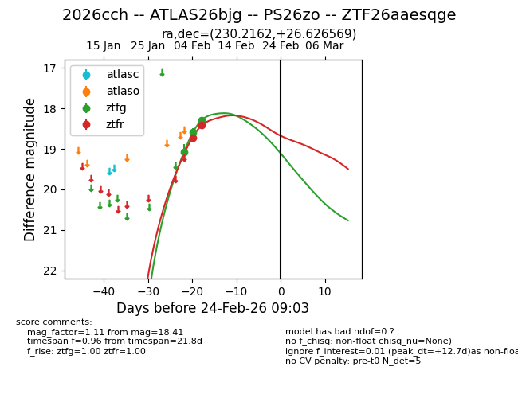
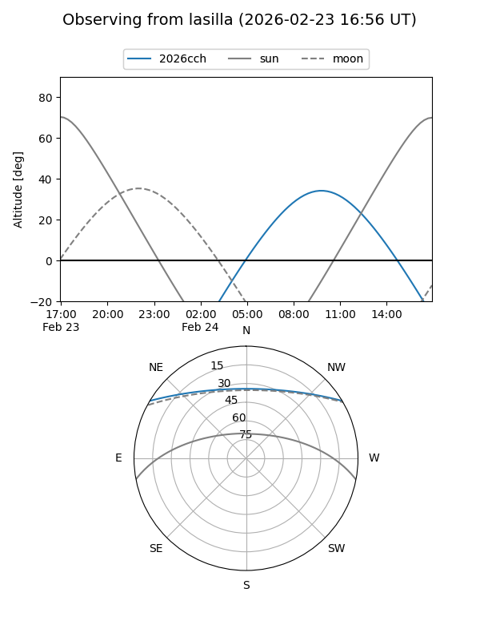
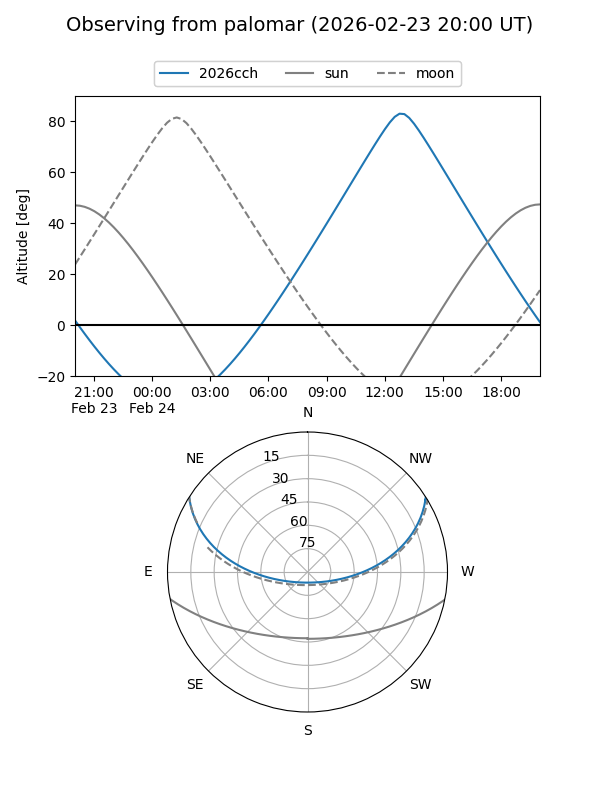
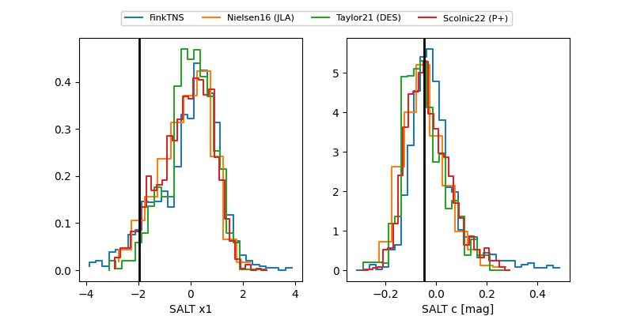

2026cch
Target 2026cch at 2026-02-24 09:08
Aliases and brokers:
FINK: link
Lasair: link
ALeRCE: link
TNS: link
YSE: link
alt names
ZTF26aaesqge (ztf,fink_ztf)
2026cch (tns,yse)
ATLAS26bjg (atlas)
PS26zo (panstarrs)
Coordinates:
equatorial (ra, dec) = 230.2162,+26.62657
equatorial (HMS+DMS) = 15:20:51.88,+26:37:35.65
galactic (l, b) = (40.7896,+56.79982)
Flags:
Photometry:
last ztfg=18.30, ztfr=18.41
3 ztfg, 2 ztfr detections
Lightcurve

Visibility


Additional plots
